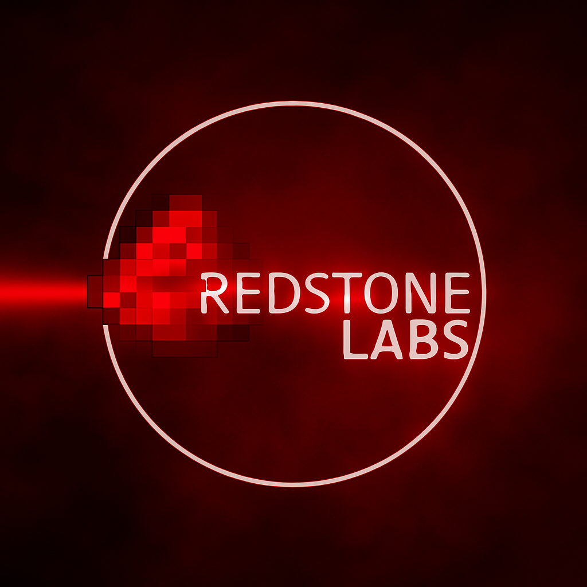

YouTube Feed
Die CONTENTCR3W-Seite laedt die neuesten Uploads von JARO, DELTA, CHAOSCINDERS und cjulfy ueber den lokalen Server.

Signal wird geladen. Energiepfade werden synchronisiert.
Shader, Sound-Layer, Channel-Pulse und Delta-Signatur werden vorbereitet.
Gaming, Redstone, Story, Musik und Projekte in einem neuen System.
ZUSAMMEN VEREINT SIND WIR UNBESIEGBAR
Erst Logo-Intro, dann CC3-Ladephase, dann ein harter Fade in die Welt von JARO & DELTA. Der Hintergrund ist kein Bild: Er ist ein laufender Shader-Canvas.
THE CONTENTCR3W mit DELTA, JARO, CHAOSCINDERS und cjulfy. Shorts und Videos vom YouTube-Kanal.
Maschinen, Commands, Datapacks, Mods, Downloads, Experimente und geheime Laborbereiche.
High-Shading-Player, eigene Playlists, Song-Bibliothek und Admin-Upload.
Die RSL-App macht unterwegs, was sonst der Rechner macht. Ohne Konto bei uns, ohne Werbung, und nichts davon wird irgendwohin hochgeladen.
Android 7.0 oder neuer · APK · kostenlos
Die CONTENTCR3W-Seite laedt die neuesten Uploads von JARO, DELTA, CHAOSCINDERS und cjulfy ueber den lokalen Server.
Datapack Timeline Studio und Minecraft Command Stacker sind direkt als Online-Tools erreichbar.
Lokale Musikplattform mit Upload, Coverbildern, Playlist, Admin-Seite und schwebendem Player.
Handy-App zum Installieren: Familie und Freunde live auf der Karte finden, Treffpunkt setzen und mit "Finde mich!" Alarm schlagen.
Projektseite fuer CONTENTCR3W, Redstone Labs und CC3 Music. Betreiberangaben werden vor einer oeffentlichen Veroeffentlichung final eingetragen.
Projekt: JARO & DELTA Website
Bereiche: CONTENTCR3W, Redstone Labs, CC3 Music
Status: Lokaler Aufbau und Testbetrieb
Vor Upload ins Internet muessen echte Kontaktdaten, Verantwortliche und rechtliche Pflichtangaben ergaenzt und geprueft werden.
Die Website laeuft lokal ueber einen Node-Server. CC3 Music speichert hochgeladene Songs, Coverbilder und Track-Daten lokal im Projektordner.
Musik-Uploads und Coverbilder werden nur lokal verarbeitet. Der Admin-Bereich ist fuer privaten Projektbetrieb gedacht.
CONTENTCR3W ruft YouTube-Feeds der vier Crew-Kanaele ab und verlinkt auf YouTube. Es werden keine Analytics-Dienste eingebunden.